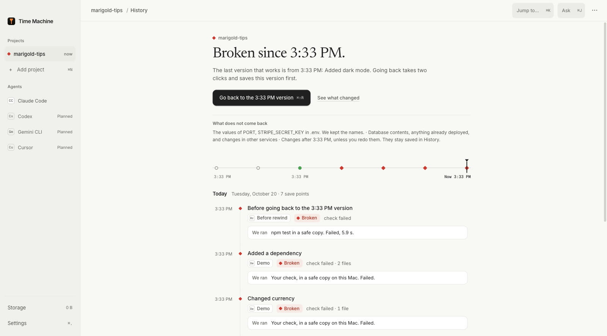
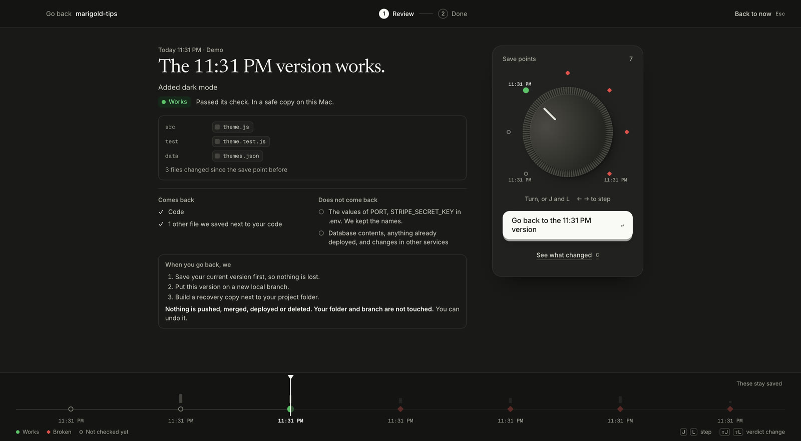
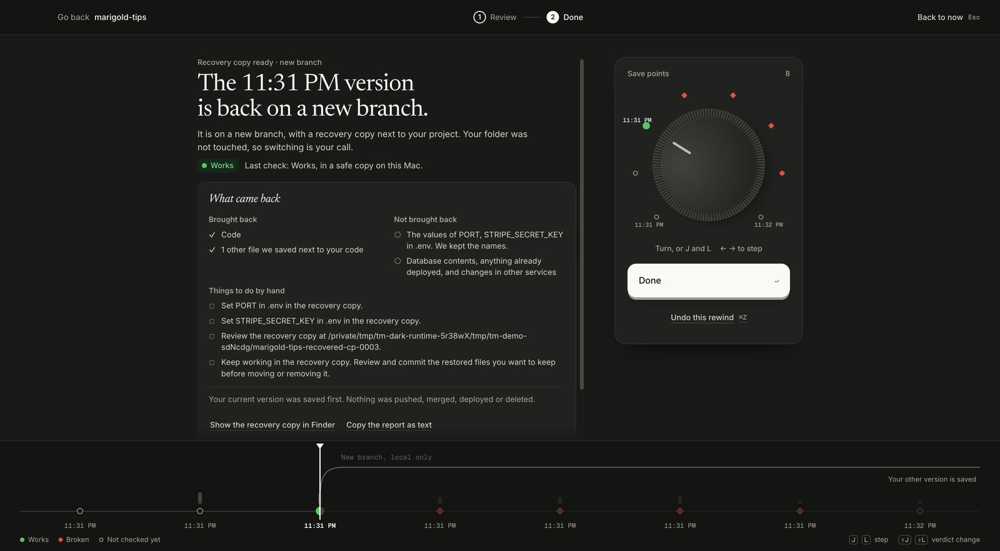

Early access. The tm CLI works today.
Get back the version
that passed your tests.
Time Machine saves your project before Claude Code acts, checks each save point with your own tests, and brings back the newest one that passes.
Try the app demo1 / The break
It worked.
Then one more change.
The newest save point fails its tests. Turn the dial back to find the one that passed.
Drag the dial, use its arrow keys, or pick a save point below.
cp-0006Added a dependency
Check evidence
The check failed with exit code 1.
Before you bring it back
Find a passing save point to review a recovery.
- Comes back
- Saved project files
- Stays outside
- Secret values and database contents
- Your current folder
- Stays as it is
Illustration only. No files are opened or changed.
tm demo run. See real app screens.For people who don’t write code
You ask an AI to change your app, and sometimes it breaks it.
Time Machine keeps a copy of your project before the AI touches it, checks which copies still work, and gives you the last good one back. You use buttons, not the terminal.
-
1
It tells you when something broke
Every change gets a save point. The app shows plainly which ones work and which are broken, and the last one that worked.

Real screen, demo project. -
2
Turn the dial back
Pick the last version that works. Before anything happens, you see what comes back and what does not, like passwords or your database.

Real screen, demo project. -
3
Press Go back. Your work is safe.
The good version comes back as a separate copy. Your current folder stays as it was, so nothing is lost, and you can undo the rewind.

Real screen, demo project.
For developers
One engine behind the app, the CLI and the hooks.
The Mac app, the tm CLI, the Claude Code hooks and the MCP server call the same engine, so their answers always match.
-
1
Save
Before each prompt and before risky shell commands.
Claude Code’s own rewind skips files changed by Bash. Time Machine saves first, outside your project folder, with a Git bundle.
Built Claude Code hooks
-
2
Check
Your own tests, in a separate copy.
$ tm find-good cp-0004 FAIL cp-0003 PASS newest that works
Built PASS or FAIL per save point
-
3
Bring back
The newest version that passes, on a new branch.
Your folder and current branch are never touched. Nothing is pushed, merged or deployed. Every report lists what did not come back.
Built
tm recover cp-0003
$ tm find-good cp-0006 FAIL The check failed with exit code 1. cp-0005 FAIL The check failed with exit code 1. cp-0004 FAIL The check failed with exit code 1. cp-0003 PASS The check passed. PASS cp-0003 is the newest version that works. $ tm recover cp-0003 Recovery ready for cp-0003. Nothing was pushed, merged or deployed. Branch tm/recover/cp-0003 Saved first cp-0007, your state before this recovery Not restored Secret values in .env: PORT, STRIPE_SECRET_KEY
tm demo on a synthetic project, shortened.The built-in rewind skips the shell.
“Checkpointing does not track files modified by Bash commands.”
When an agent runs rm, mv or sed -i, that rewind cannot bring the files back. Time Machine saves before risky commands, outside your project, so a deleted folder does not take your save points with it.
How it compares with what you have
Your agent’s rewind and Git each cover part of the problem. Time Machine adds the check and the safe way back.
| Capability | Claude Code rewind | Git | Time Machine |
|---|---|---|---|
Files changed by shell commands like rm | Not tracked | Only what you committed | Saved before risky commands |
| Saves automatically while the agent works | Yes | No, you commit | Yes, with Claude Code hooks |
| Tells you which version passes your tests | No | No, you test by hand | Yes, each in a separate copy |
| Going back leaves your current work alone | Restores in place | Depends on the command | New branch and a copy |
| Lists what didn’t come back | No | No | Every time |
Claude Code behavior from its checkpointing docs. Other agents are planned, not built.
4 words you’ll see in the app
- Save point
- A copy of your project at one moment. Made before each request to the AI and before risky commands.
- Check
- Your own tests, run on a save point in a separate copy. The answer is Works or Broken.
- Go back
- The newest save point that works comes back as a separate copy. Your current work stays where it is.
- Does not come back
- Passwords and keys, databases, anything already published. Every result lists these, so nothing surprises you.